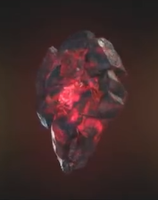
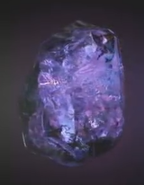

| Название камня |
Цвет камня |
Описание |
Изображение |
| Камень пространства |
Синий |
Тессеракт назван так из-за своей кубической формы. Он способен предоставить доступ к любой точке во вселенной, если его использовать правильно. Уникальный элемент, из которого состоит тессеракт, был использован людьми для того, чтобы создать продвинутое вооружение. Камень сыграл ключевую роль в развитии человечества во время рассвета супергероев. |
 |
| Камень разума |
Жёлтый |
Скипетр был оружием, которое использовало жёлтый камень разума, хранящийся в синем компьютерном модуле, который также скрывал присутствие камня. |
 |
| Камень реальности |
Красный |
В отличии от всех, ранее встреченных камней бесконечности, у которых содержащие ячейки - твёрдые, эфир выглядит как тёмная, красная и вязкая жидкость. Эфир ведёт себя как симбиот, способный впитаться в тело живого сосуда, даруя ему тем самым неимоверную мощь и силу, и судя по всему - неограниченные возможности. |
 |
| Камень силы |
Пурпурный |
Сфера - это защитный корпус пурпурного камня бесконечности. Камень является источником невероятной силы, который, при использовании всего потенциала, содержит достаточно мощи, чтобы уничтожить целую планету. |
 |
| Камень времени |
Зелёный |
Глаз Агамотто - древний артефакт, подвеска, созданная Агамотто, первым верховным чародеем, предположительно для содержания и управления силой камня времени, находящегося внутри. |
|
| Камень души |
Оранжевый |
Мало что известно о Камне души. Однако, согласно древним текстам Вонга, камень души может оказаться самой большой угрозой из всех камней бесконечности. |
 |